Nobody had designed anything for the destination reps yet
The project surfaced during Itaka’s platform redesign. The destination reps meet flights, run transfers and sell excursions across more than 100 destinations, and no one had built a tool for them. That gap became a brief.
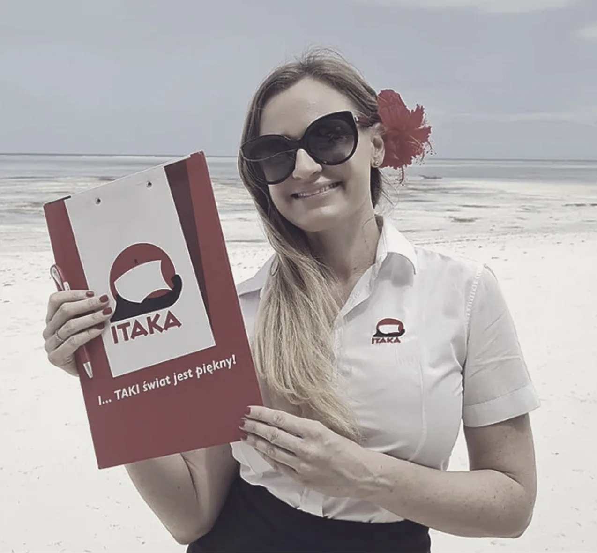
A rep met every flight with a printed A4 list and over 100 names to check
Everything on that paper was typed into Excel that evening, then retyped by the department manager into our enterprise system. The same information was entered three times.
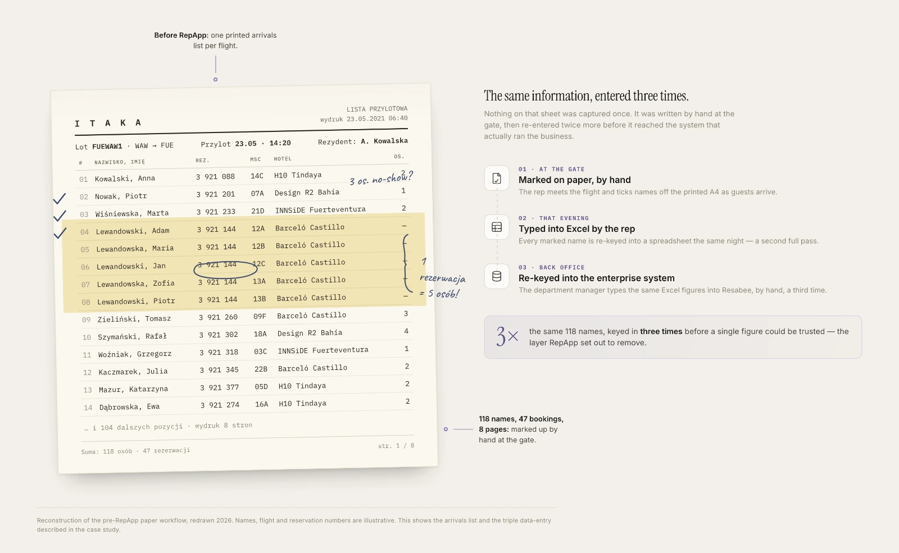
Nothing could assume a signal
Destination airports frequently had no working internet. Offline was not a fallback, it was the condition the whole architecture sat on.
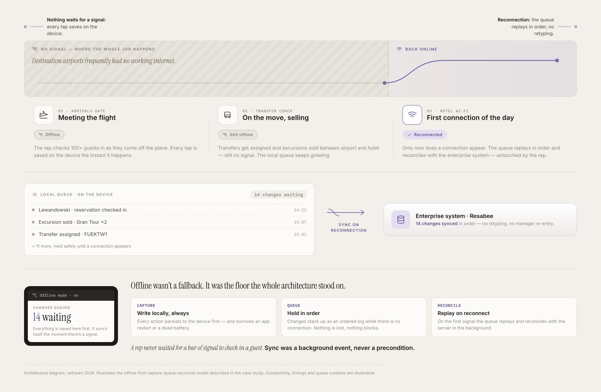
The first pitch failed, because it made the wrong case
The first pitch led with efficiency for the reps. The room was deciding on budget, and travel had just stopped. A second pitch, built on research and on what competitors were already doing, passed. The first argument had been correct and irrelevant at once.
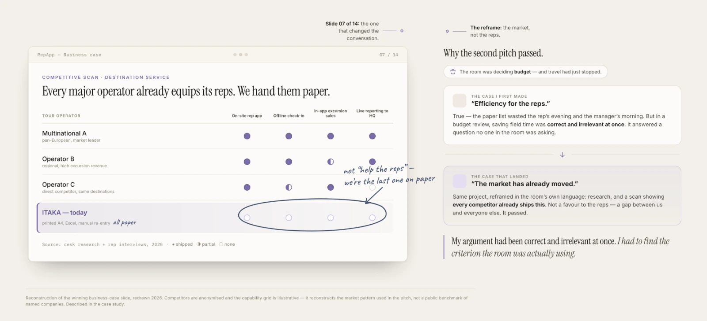
The pandemic emptied the destinations and opened the research window
Reps are normally impossible to reach, abroad and in motion through peak season. In 2020 they were employed with almost no guests. Two to three months went into interviewing around ten of them, and into building the observation instrument our Product Owner then used at destination airports.
Only features that helped the rep and earned money at once could ship
With no budget, anything doing only one of those jobs could not survive review. That rule decided the scope, and cut the feature the reps needed most.
What was scoped out
- Reporting and system integration. What reps needed most. It shipped later.
- Contactless check-in. Blocked on the consumer app’s backlog, not on us.
- Anything that could not defend itself commercially.
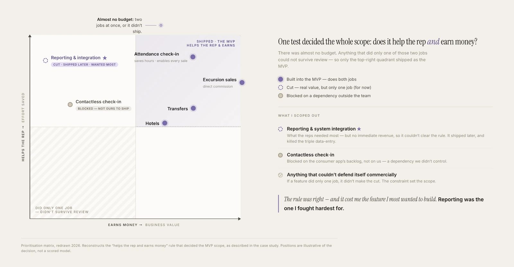
The reps chose the tablet, and their reasoning was about their hands
Both options went to the reps. They had worked from A4 held in both hands and turned toward the guest. A phone would have changed the format and the tool in one week. The tablet kept the gesture, and let them show excursion video while selling.
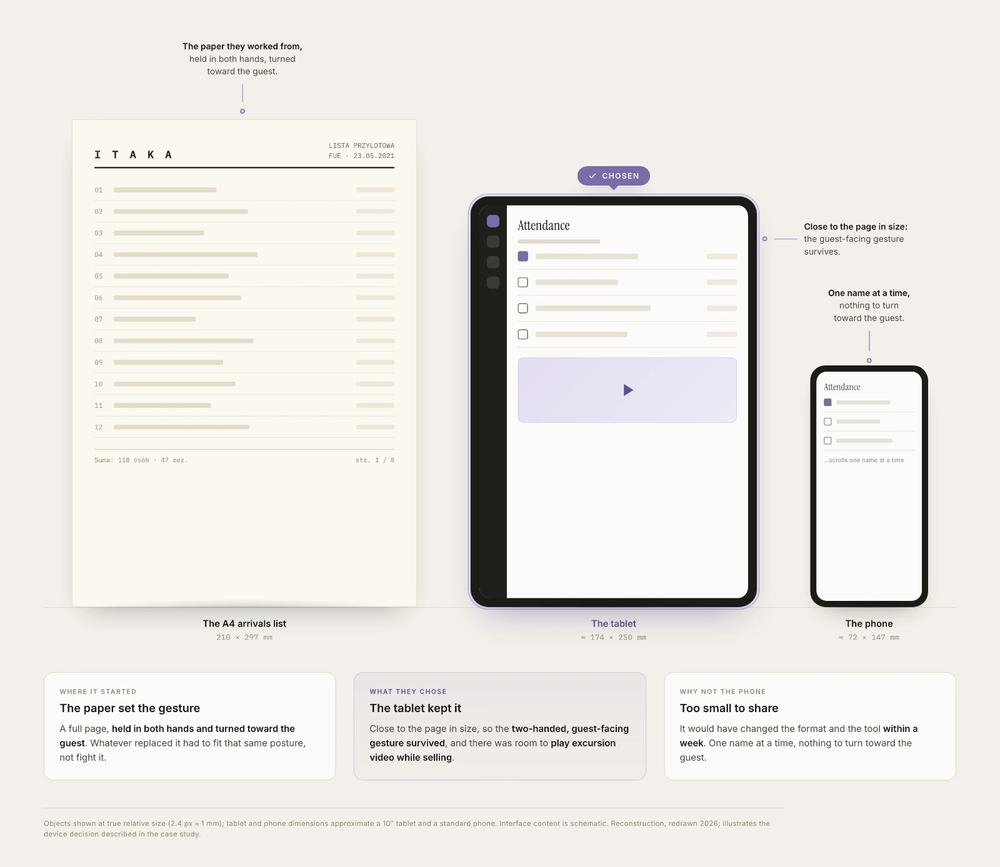
The MVP followed the arrival in the order it actually happens
Three tabs, matching what a rep does between gate and coach.
- Attendance — search by surname or reservation number
- Hotels — which group goes where
- Transfers — which coach, what time, both directions
Excursion sales sat alongside, also offline.
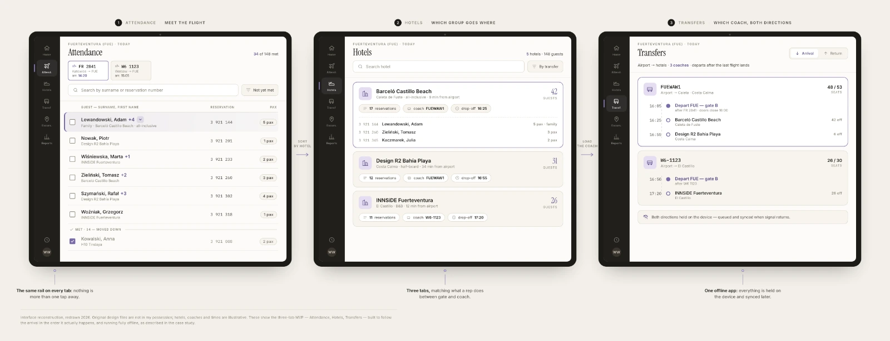
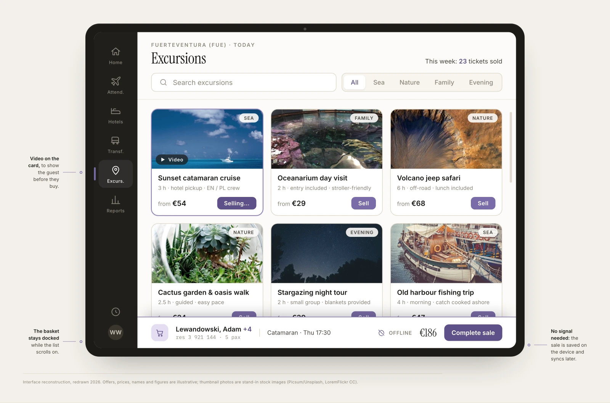
We built check-in around the passenger, and field testing proved that wrong
Our database stores people individually, so that is how the first build worked. In the field a family of five walked up as one group and the rep tapped five times. On paper, one stroke of a pen covered all five. Digitising the data model would have made the job slower than paper, so we rebuilt check-in around the reservation.
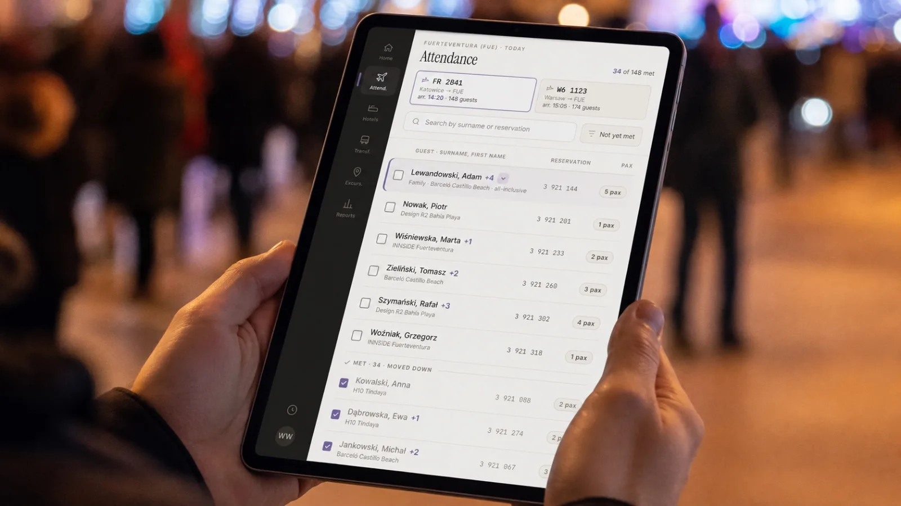
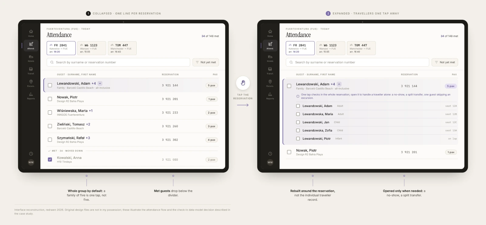
The reps warned us about sunlight before we built anything
They warned us in interviews that nothing would be readable in full sun, and testing confirmed it. Across 100 destinations we could not solve this for one climate, so contrast went into the hardware specification.
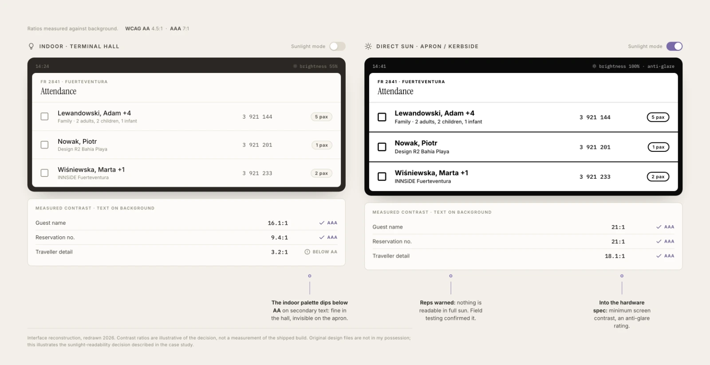
Over 50% less time at the airport, and a whole layer of retyping gone
Once reporting connected to the enterprise system, the rep’s Excel work and the manager’s re-entry disappeared.
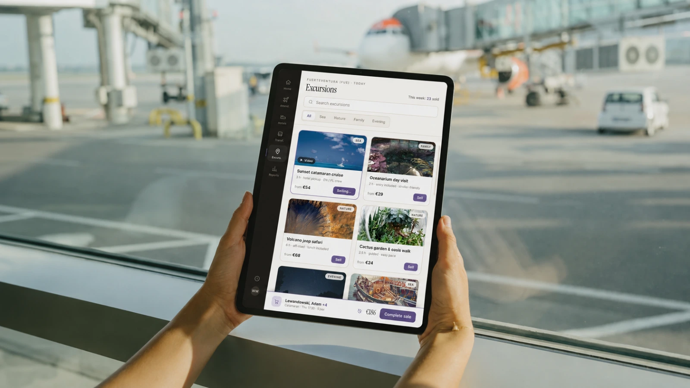
Gamification lifted sales, and the unease it left has stayed
When reporting shipped, we added points and team rankings showing who sold most each month. Sales rose sharply. The pressure to repay the hardware was real, and so is the discomfort of publishing individual figures inside a team that lives and works together.
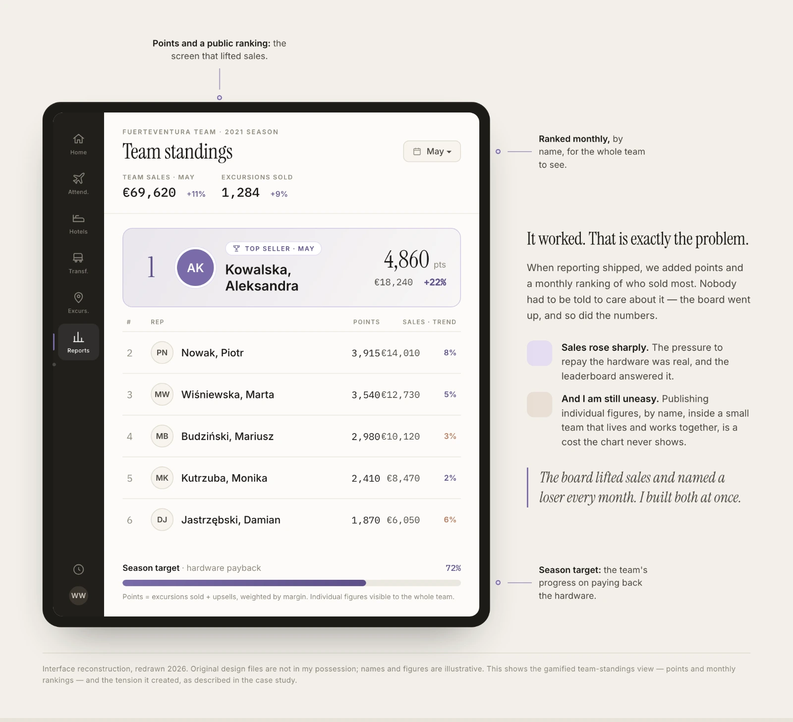
What the project taught, and what would change next time
- A correct argument is not a persuasive one. The criteria the room used had to be found first.
- Both product-changing findings came from watching, not asking.
- Systems carry assumptions about their users. Passenger-level check-in came from the schema, not a choice.
- Resources are worth negotiating before saying yes, not after.
- Whether the reps trusted the sync went untested. A rep who does not keeps a paper backup, and the paper stays.
- GDPR draws the line for shortcuts. A throwaway build with guest data can only go so far.
Today I would prototype before the first pitch, not after the rejection.